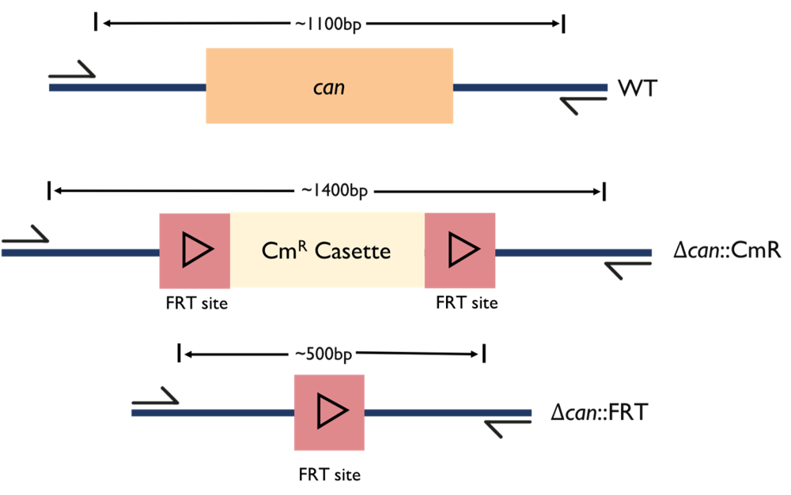

Overview
The general public has many misconceptions when it comes to genetically modified organisms (GMOs), which then leads to a lot of fear and stigma. In terms of gaining widespread acceptance for synthetic biology applications in daily life, there is still much effort to be made. Since the advent of synthetic biology, scientists have been working hard to implement safeguards in their genetically modified organisms. When it comes to biotherapeutics or any product of genetic engineering that will be consumed by humans, safety has never been more important.
Lab Safety
The iGEM ZJU team is in full compliance with the safety and security policies of the iGEM competition. The team contains equipment for both Biosafety Level 1 and 2. Before we started our work in the lab, all team members had to receive training and pass different safety tests provided by our university. Manipulation and waste management were carried out following all safety rules.
Project Safety
Escherichia coli Nissle 1917
In order to make our biotherapeutic safe for chicken consumption, we used E. coli Nissle 1917 as our chassis. Escherichia coli Nissle 1917 is a nonpathogenic E. coli strain isolated by Alfred Nissle in 1917. It is one of the best examined probiotic strains. It has proven to have an intestinal anti-inflammatory effect without major immunotoxic properties. A clinical study to evaluate the safety, tolerability, and efficacy of consuming E. coli Nissle, and research has shown that have an intestinal anti-inflammatory effect without major immunotoxic properties.
Biosafety
Knock-out of can gene
The can gene of E. coli encodes a β-class carbonic anhydrase (CA), an enzyme that assists rapid interconversion of CO2 and water into carbonic acid, protons and bicarbonate ions. E. coli requires a constant supply of bicarbonate as a metabolic substrate during normal growth. So, if this gene is knocked out, E. coli is unable to turn the CO2 into bicarbonate fast enough before the CO2 diffuses out and cause cell death.
Thereby, we decided to use the can gene as a kill switch. Inside the stomach, where we want the E. coli to survive, the CO2 concentration is high enough to allow the spontaneous conversion of CO2 into bicarbonate ions. However, when the E. coli exits the chicken body, the lowered concentration of CO2 will result in its death.

pic1.Knock-out of can gene
Not Release GMOs
To avoid gene leaks caused by E. coli conjugation with other bacteria, we use the Cre-loxP system to delete our related genes in other bacteria. The Cre recombinase (Cyclization Recombination Enzyme) is encoded by a gene of Escherichia coli bacteriophage P1 Cre, which has similar restriction enzyme capable of specifically recognizing loxP sites. The loxP (locus of X-overP1) locus is 34bp in length, including two 13bp inverted repeats and an 8bp spacer region. Wherein the inverted repeat is specific Cre recombinase recognition site, while the spacing region determines the direction of loxP sites. When the F factor-containing plasmid was transferred into other bacteria, the lack of the repressor protein Msx-1 caused the Cre recombinase to express, specifically recognized the loxp site and cut the sequence between the two LoxP sites to avoid gene leakage and ensure the specificity, efficiency, accuracy and speed of this process.